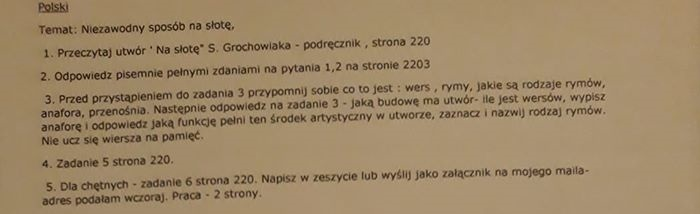

j. polski
-
18.03.2020 - Dzień dobry, Temat:Bibliofil w pizzerii. 1.Przeczytaj fragment utworu M. Musierowicz "Język Trolli" - podręcznik strona - 221-224 2. Wyjaśnij , znaczenie słów: bibliofil, barbarzyństwo, barbarzyńca - sprawdż w słowniku, wyjaśnienie słowa bibliofil - podręcznik strona 226 3.Napisz plan zdarzeń w formie równoważników zdań - pisemnie w zeszycie 4.Opowiedz ustnie w narracji pierwszoosobowej o zdarzaniach w pizzerii z punktu widzenia jednej z wymienionych osób: dziadka, Józinka, właściciela pizzerii, innych klientów 5. Odpowiedz pisemnie na pytanie - Jaka sytuacja wywołała oburzenie,gniew, co było barbarzyństwem w oczach dziadka? Czy podzielasz jego opinię? Dlaczego? Tyle na dzisiaj. Jeżeli macie jakieś problemy, to proszę napisać. Pamiętajcie o czytaniu lektury- termin 4.05.2020. Spokojnie pracujcie. Pozdrawiam. Do piątku.
- 17.03.2020 - Zdjęcie poleceń:

Powrót